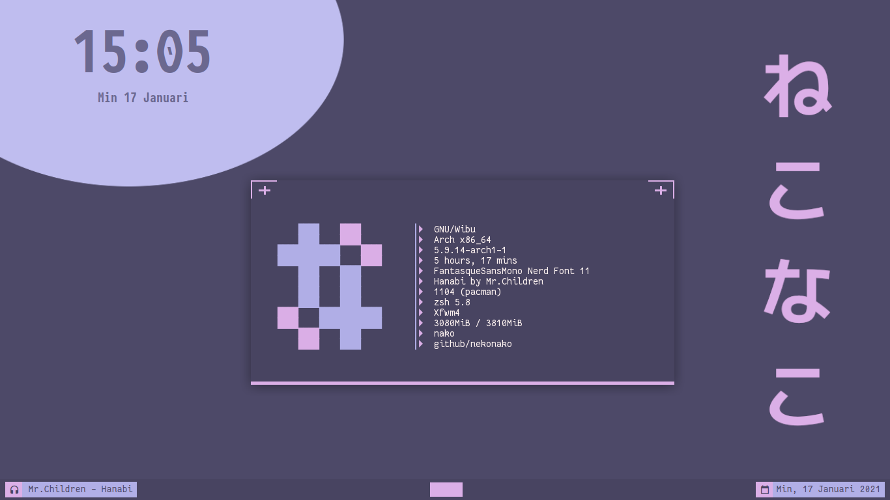

Latar belakang
Linux merupakan sistem operasi yang sangat fleksibel, salah satu hal yang membuatnya fleksibel adalah kita bisa memilih desktop environment kita sukai dan mengatur workflownya sesuai dengan kebiasaan kita.
Saya sendiri sudah satu tahun terakhir menggunkan i3 sebagai windows manager, dan i3 sangat nyaman digunkan.
Tapi ada kalanya kita bosan dan ingin mencoba hal baru, dan tiba-tiba saya teringat dengan setup dari salah satu legend di dunia persilatan yaitu mas adhi yang menggunkan xfwm standalone.
Saya pun langsung mengintip config beliau dan mencobanya.
Persiapan
Kita persiapkan terebih dahulu bahan-bahanya
sudo pacman -S xfwm4 nitrogen tint2 dunst conky redshift sxhkd xsettingsd polkit-gnome
Tentu package yang saya install diatas bersifat opsional, yang terpenting adalah menginstall xfwm4.
Konfigurasi
Xfwm sendiri merupakan window manager yang digunakan pada xfce dan xfce sendiri merupakan desktop environment yang bersifat modular.
Oleh karena itu kita bisa menginstall komponenya tanpa harus menginstall desktop environmentnya itu sendiri.
Karena kita hanya menginstall window managernya saja, ada beberapa hal yang harus dilakukan secara manual. berikut adalah flow dari login sampai menjalankan xfwm
FLOW
Display Manager => mejalankan session => menlajankan apliaksi ( autostart ) => menjalankan xfwm
Dari flow diatas kita dapat mengetahui apa saja yang harus kiya lakukan.
Membuat session
Display manager seperti lightdm, slim, gdm dan lain-lain biasanya membaca session di directory /usr/share/xsessions, oleh karena itu akan membuat session untuk xfwm dan disimpan disana.
Caranya mudah cuku buat file dengan extensi .desktop, lalu taruh di durectory /usr/share/xsessions.
# xfwm.desktop
[Desktop Entry]
Name=Xfwm
Comment=Log in using the Xfwm window manager without session manager.
Exec=/usr/bin/xfwm4-session.sh
Icon=xfwm4
Type=Application
perhatikan bagian Exec=/usr/bin/xfwm4-session.sh, sebenarnya kita bisa saja langsung mengeksekusi xfwn, tapi sebelum itu
kita ingin menjalankan aplikasi-apliaksi yang kita butuhkan terlebih dahulu sebelum sebelum menjalankan xfwm.
Oleh karena itu kita membuat bash script simple yang digunakan untuk mengeksekusi aplikasi autostart dan xfwm.
# xfwm4-session.sh
#!/bin/bash
/home/$USER/.config/xfwm4/autostart
xfwm4
jangan lupa beri hak akses executeable
Membuat autostart
mkdir ~/.config/xfwm4 && touch ~/.config/xfwm4/autostart
chmod +x ~/.config/xfwm4/autostart
# autostart
nitrogen --restore &
sxhkd &
/usr/lib/polkit-gnome/polkit-gnome-authentication-agent-1 &
mpd &
redshift &
tint2 &
conky --config ~/.config/conky/simple/config.conkyrc &
xsettingsd &
Membuat shortcut untuk aplikasi
# ~/.config/sxhkd/sxhkdrc
## Restart sxhkd
super + Escape
pkill -USR1 -x sxhkd
## simple terminal
super + Return
st
## alacritty
super + shift + Return
alacritty
## pcmanfm
super + f
pcmanfm
## rofi
super + o
rofi -show drun
## neovim
super + shift + n
st -e 'nvim'
super + n
alacritty -e 'nvim'
## music
super + m
alacritty -e 'ncmpcpp'
## tmux
super + t
alacritty -e 'tmux'
## firefox
super + w
firefox
# dmenu
super + j
j4-dmenu-desktop --dmenu="dmenu -h 30"
super + d
dmenu_run -h 30
### MEDIA BUTTON ###
# + volume
XF86AudioRaiseVolume
amixer -D pulse sset Master 5%+
# - volume
XF86AudioLowerVolume
amixer -D pulse sset Master 5%-
# mute
XF86AudioMute
amixer -D pulse -q sset Master toggle
XF86AudioMic
amixer -D pulse -q sset Mic toggle
# - brightness
XF86MonBrightnessDown
light -U 5
# + brightness
XF86MonBrightnessUp
light -A 5
# Play
XF86AudioPlay
mpc toggle
# Stop
XF86AudioStop
mpc stop
# Prev
XF86AudioPrev
mpc prev
# Next
XF86AudioNext
mpc next
## Exit xfwm
super + shift escape
pkill xfwm4
Mode tiling dengan zentile
Karena saya pecinta tiling window, atas saran mas harry saya memutuskan untuk menggunakan zentile.
Untuk menggunakanya kita cukup medownload pre compile binarynya atau mengcompile sendiri.
Membuat App launcher zentile
Saat saya menggunakan zentile dan dimasukan ke autostart, doi tidak mau berjalan oleh karena itu saya memutuskan untuk membuat launchernya kemudian saya jalankan lewat dmenu/rofi.
# FILE => $HOME/.local/share/applications/zentile.desktop
[Desktop Entry]
Type=Application
Name=Zentile
Comment=Automatic Tiling for EWMH Complaint Window Managers
Exec=zentile
Categories=ConsoleOnly;System;
Kesimpilan

xfwm + zentile